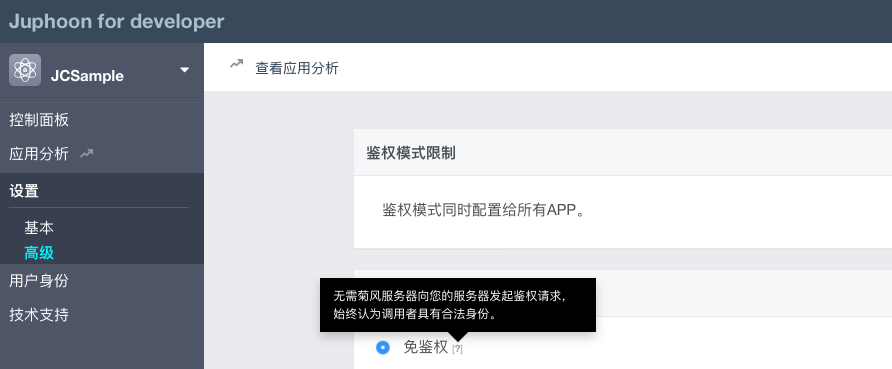

创建应用¶
1.注册开发者账号
开始之前请先 注册成为开发者 。
如果您已经拥有开发者帐号，请直接 登录 ，并开始创建您的应用。
登录之后，您可以通过 菊风云平台 开发者帐号使用开发者工具和创建应用。
2.创建应用
登录开发者帐号后，点击 “添加应用”，输入应用名称以创建应用。

注解
应用名称创建后不可修改。
创建完成后，系统会自动为您的应用生成 AppKey。
点击 “显示” 即可以看到 AppKey。

AppKey 是应用在 菊风云平台 中的唯一标识。
在创建应用时，同一个控制台帐号中创建的多个应用属于同一个域。同域中的应用是可以互通的。 所以同一帐号下的应用即使 AppKey 不同，也可以进行业务往来。例如，从一个应用登录的用户可以呼叫另一个应用登录的用户。
应用创建完成后，即可对应用进行设置，应用设置包括基本设置和高级设置。 其中，免签权模式表示帐号由用户自行生成，用户名、密码等信息保存在 菊风云平台 服务器中，服务器不检查密码。
AppKey 说明¶
AppKey 是应用在 菊风云平台 中的唯一标识。
在创建应用时，同一个控制台帐号中创建的多个应用属于同一个域。同域中的应用是可以互通的，所以同一帐号下的应用即时 AppKey 不同，也可以进行业务往来。例如，从一个应用登录的用户可以呼叫另一个应用登录的用户。